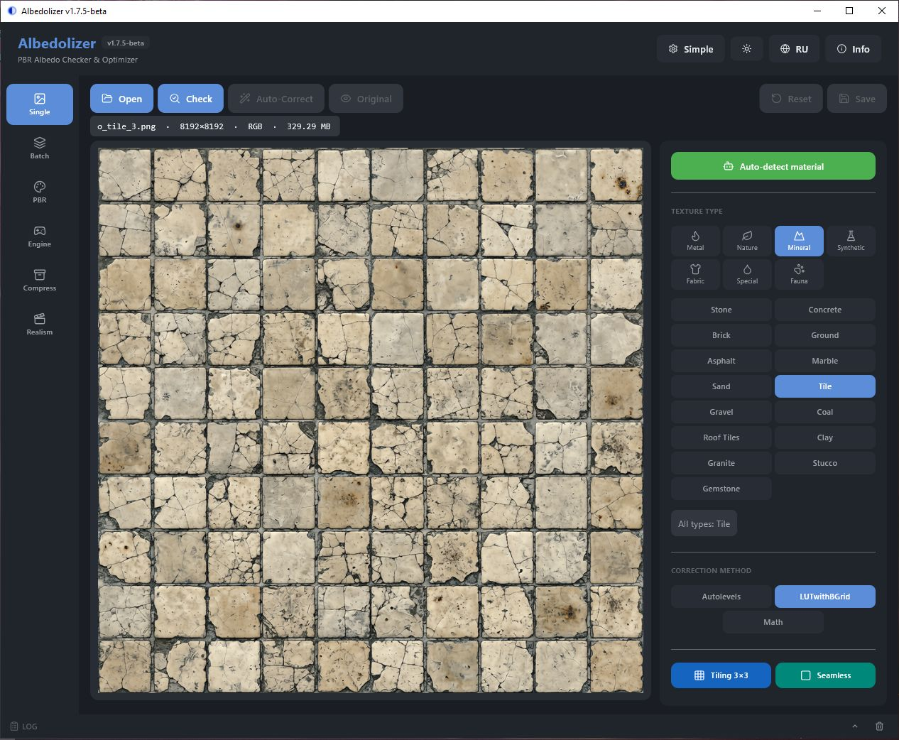
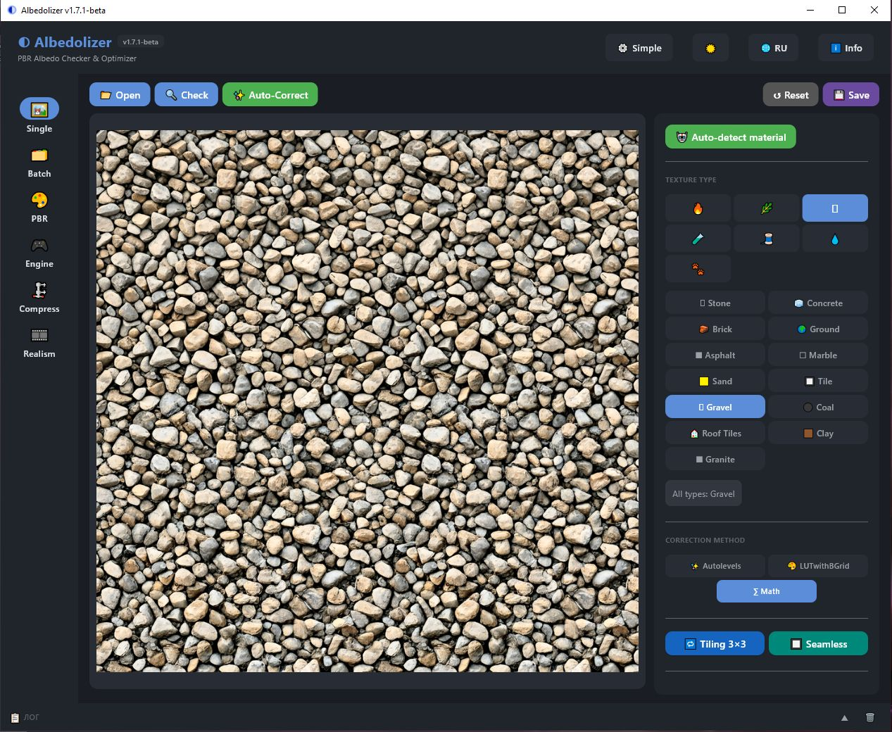
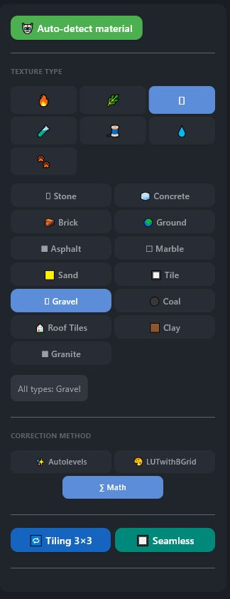
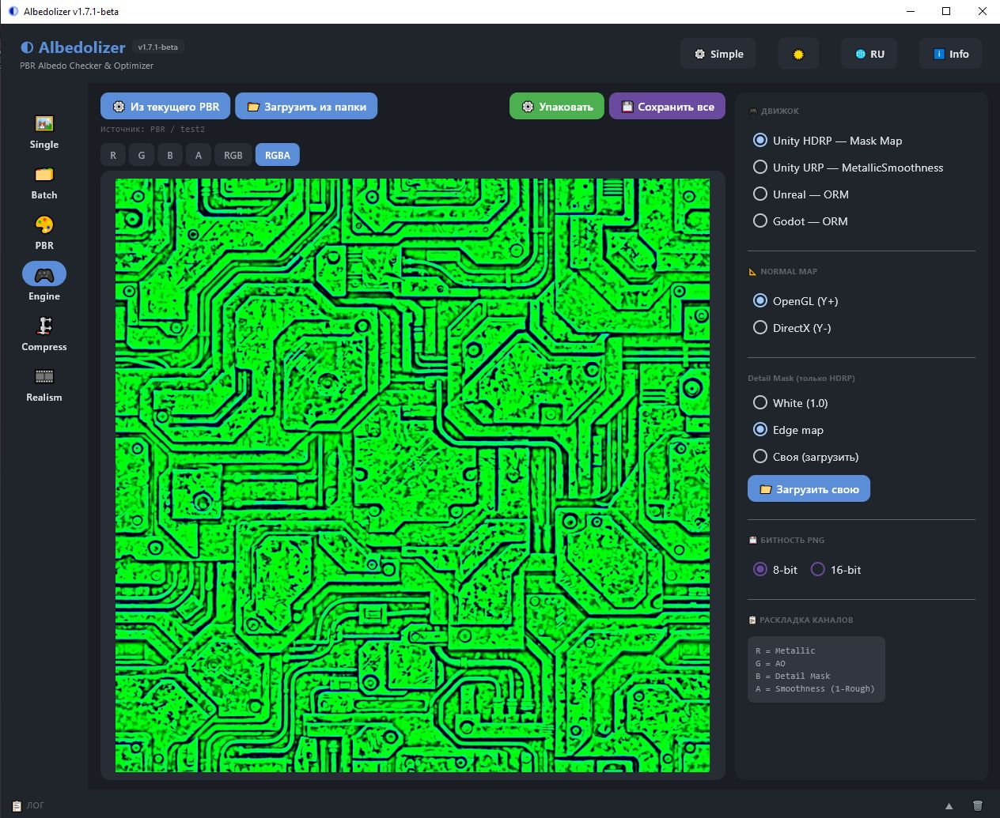
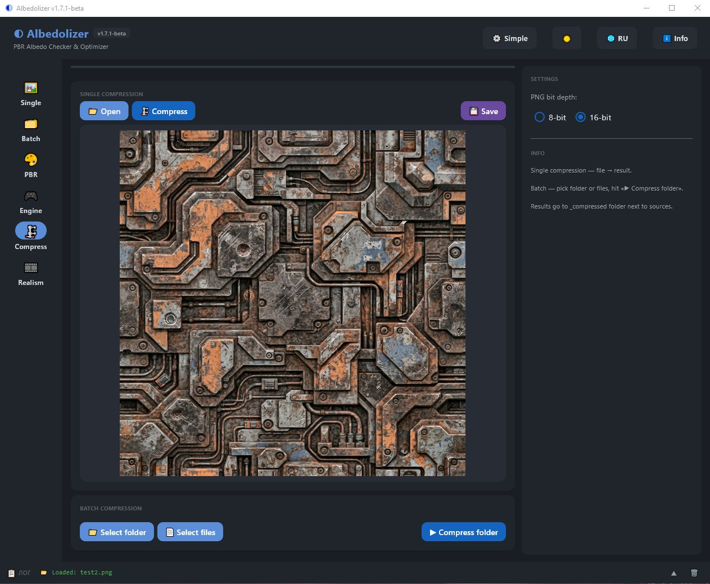
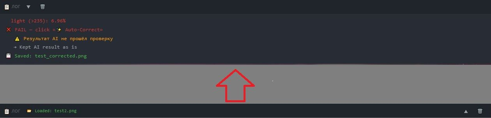
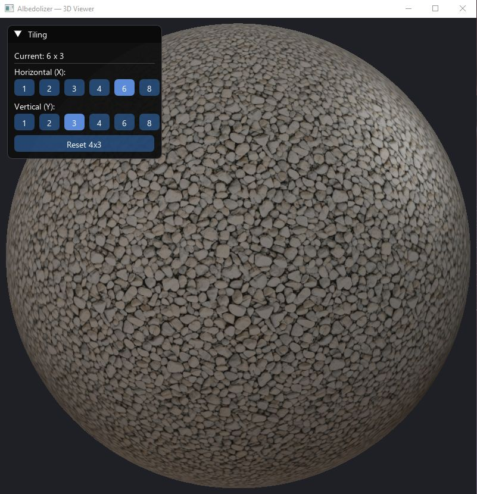

Проверяй, чини и генерируй PBR-текстуры Check, fix, and generate PBR textures
Бесплатный инструмент для 3D-художников: анализ Albedo, AI-коррекция цвета, 7 PBR-карт, экспорт под Unity / Unreal / Godot и 3D-вьюер — всё в одном окне. Плюс бесплатные аддоны для Blender и Unity. Free tool for 3D artists: Albedo analysis, AI color correction, 7 PBR maps, engine export for Unity / Unreal / Godot, and a 3D viewer — all in one window. Plus free add-ons for Blender and Unity.

Анализ AlbedoAlbedo Analysis
Heatmap проблемных зон + статистика: min / max / avg / median / перцентили.Heatmap of problem zones + stats: min / max / avg / median / percentiles.
AI-коррекция цветаAI Color Correction
Три метода: Autolevels (XCiT), LUTwithBGrid (ECCV 2024), Math. Плюс фикс «мыла» и насыщенности.Three methods: Autolevels (XCiT), LUTwithBGrid (ECCV 2024), Math. Plus soap removal and saturation boost.
Автоопределение материалаMaterial Auto-Detection
CLIP-классификатор сам подбирает пресет из 50 доступных.CLIP-based classifier picks the right preset from 50 options.
7 PBR-карт7 PBR Maps
Height, Normal, AO, Roughness, Metallic, ORM, Edge. 8 или 16 bit.Height, Normal, AO, Roughness, Metallic, ORM, Edge. 8 or 16 bit.
Свои Metallic / RoughnessCustom Metallic / Roughness
Загрузка своих grayscale-карт. Авто-ресайз под размер albedo.Load your own grayscale maps. Auto-resize to albedo size.
Seamless как в GIMPGIMP-style Seamless
Точный порт tile-seamless.c + Hi-pass pre-filter.Exact port of tile-seamless.c + Hi-pass pre-filter.
Экспорт под движкиEngine Export
Unity HDRP / URP, Unreal ORM, Godot ORM. DirectX / OpenGL flip, Detail Mask.Unity HDRP / URP, Unreal ORM, Godot ORM. DirectX / OpenGL flip, Detail Mask.
Realism пресетыRealism Presets
Процедурный grain, high-pass, HSV-вариация, виньетка. Мягкий / Средний / Жёсткий.Procedural grain, high-pass, HSV variation, vignette. Soft / Medium / Hard.
Встроенный 3D-вьюерBuilt-in 3D Viewer
4 формы, Substance-style освещение, ACES tone mapping, слайдер экспозиции.4 shapes, Substance-style lighting, ACES tone mapping, exposure slider.
50 пресетов в 7 категориях50 Presets in 7 Categories
Металл, природа, минерал, синтетика, ткани, спецэффекты, фауна.Metal, nature, mineral, synthetic, fabric, special, fauna.
Пакетная обработкаBatch Processing
1–8 потоков. AI-коррекция или сжатие целых папок.1–8 threads. AI correction or compression for whole folders.
Глобальные хоткеиGlobal Hotkeys
Ctrl+O, Ctrl+S, Ctrl+R, Ctrl+Z, Space, Enter.Ctrl+O, Ctrl+S, Ctrl+R, Ctrl+Z, Space, Enter.
🧩 Бесплатные аддоны 🧩 Free Add-ons
Albedolizer доступен прямо внутри Blender и Unity — тот же движок, тот же результат. Albedolizer is available right inside Blender and Unity — same engine, same result.
Albedolizer-Blender
FREE · GPL-3.0Blender-аддон для генерации PBR-карт прямо в N-панели. AI-коррекция, 50 пресетов, seamless, batch, автосборка нод к Principled BSDF, упаковка под движки. Blender add-on that generates PBR maps right in the N-Panel. AI correction, 50 presets, seamless, batch, auto-wired Principled BSDF nodes, engine packing.
- 7 PBR-карт из Albedo7 PBR maps from Albedo
- Modal прогресс-бар — Blender не виснетModal progress bar — Blender stays responsive
- RU / EN интерфейсRU / EN interface
- Blender 4.2 LTS+ · Windows
Albedolizer-Unity
FREE · MITUnity Editor-аддон для генерации PBR-карт и автосоздания URP-материалов. Правильная упаковка каналов (R=Metallic, G=AO, A=Smoothness), batch, движковая упаковка. Unity Editor add-on that generates PBR maps and auto-creates URP materials. Proper channel packing (R=Metallic, G=AO, A=Smoothness), batch, engine packing.
- Автосоздание URP/Lit материалаAuto-creation of URP/Lit material
- Экспорт под HDRP / Unreal / GodotHDRP / Unreal / Godot packing
- Установка через UPM Git URLUPM install via Git URL
- Unity 2022.3 LTS+ · URP · Windows
Скачать AlbedolizerDownload Albedolizer
Версия 1.7.4-beta для Windows. Установщик сделает всё сам — ярлыки, меню Пуск, удаление. Version 1.7.4-beta for Windows. Installer handles everything — shortcuts, Start Menu, uninstaller.
Windows 10/11, 64-bit · MIT License · Бесплатно Windows 10/11, 64-bit · MIT License · Free
📖 Мануал📖 Manual
Полное руководство по всем вкладкам и инструментамFull guide to all tabs and tools
1. Хедер и навигация1. Header & Navigation
Верхняя панель содержит название, версию, переключатель режима Simple / Advanced, тему, язык и кнопку Info. Слева — NavigationRail со всеми вкладками.
Top bar contains title, version, Simple / Advanced toggle, theme switcher, language switcher, and Info button. Left side — NavigationRail with all tabs.

2. Single — одиночная обработка2. Single Processing
Simple режимSimple mode
Одна кнопка 🚀 Process texture делает всё: открывает файл, AI-коррекция, буст насыщенности, результат. Плюс CLIP автоматически определяет материал и подбирает пресет.
One button 🚀 Process texture does everything: open file, AI correction, saturation boost, result. CLIP auto-detects material and picks the preset.

Advanced режимAdvanced mode
Отдельные кнопки: 📂 Open, 🔍 Check, ✨ Auto-Correct, ↺ Reset, 💾 Save. Кнопка 👁 Оригинал / Результат переключает превью. Если Check показал FAIL — жми Auto-Correct.
Separate buttons: 📂 Open, 🔍 Check, ✨ Auto-Correct, ↺ Reset, 💾 Save. The 👁 Original / Result button toggles the preview. If Check shows FAIL — click Auto-Correct.

3. Правая панель Single3. Single Right Panel
Все настройки в одном месте: автоопределение материала, тип текстуры, метод коррекции, тайлинг, seamless, удаление мыла, насыщенность, статистика.
All settings in one place: auto-detect material, texture type, correction method, tiling, seamless, soap removal, saturation, statistics.

- 🤖 Auto-detect material — CLIP-классификатор подбирает пресетCLIP classifier picks the preset
- Texture type — категории + пресетыcategories + presets
- Correction method — Autolevels / LUTwithBGrid / MathAutolevels / LUTwithBGrid / Math
- Tiling 3×3 — проверка бесшовностиseamless check
- Seamless — GIMP-style с Hi-pass pre-filterGIMP-style with Hi-pass pre-filter
- Remove soap — фикс размытых участковfix blurry patches
- Saturation — фикс блеклых цветовfix washed-out colors
4. PBR — генерация карт4. PBR Maps
7 карт из одного Albedo: Height, Normal, AO, Roughness, Metallic, ORM, Edge.
7 maps from one Albedo: Height, Normal, AO, Roughness, Metallic, ORM, Edge.

📂 Load Albedo— выбери текстуруpick texture- Выбери пресет — слайдеры настроятся самиPick preset — sliders auto-tune
🎨 Generate— сгенерировать 7 картgenerate 7 maps- Переключайся между картами кнопками сверхуSwitch maps with the buttons on top
💾 Save all— папка<name>_pbr/рядом с исходникомfolder<name>_pbr/next to source
5. Свои Metallic / Roughness карты5. Custom Metallic / Roughness Maps
В PBR-вкладке, рядом с выбором Metallic и Roughness, можно выбрать Custom и загрузить свою grayscale-карту.
In the PBR tab, next to Metallic and Roughness selection, pick Custom and load your own grayscale map.
- Выбери
Customдля Metallic или RoughnessPickCustomfor Metallic or Roughness - Нажми
📂 Load metallic mapили📂 Load roughness mapClick📂 Load metallic mapor📂 Load roughness map - Если размер не совпадает с Albedo — появится диалог с подтверждением авто-ресайзаIf size doesn't match Albedo — a confirmation dialog for auto-resize appears
- PBR автоматически перегенерируется с новой картойPBR automatically regenerates with the new map
В Batch PBR при использовании Custom-карты в лог пишется предупреждение — карта применяется ко всем текстурам папки.
In Batch PBR, when using a Custom map, a warning appears in the log — the map is applied to all textures in the folder.
↑ К содержаниюBack to top6. Seamless — бесшовность6. Seamless
Кнопка 🔲 Seamless в правой панели Single делает текстуру бесшовной. Это точный порт GIMP tile-seamless.c — диагональная весовая функция, центр не трогается, края переплетаются.
The 🔲 Seamless button in the Single right panel makes your texture tileable. Exact port of GIMP's tile-seamless.c — diagonal weight function, center untouched, edges blended.
- Hi-pass pre-filter — опциональный чекбокс, выравнивает яркость краёвoptional checkbox, evens out brightness between edges
- Tiling 3×3 — включи для проверки результатаenable to check result
7. Движок — экспорт7. Engine Export
Упаковка PBR-карт под конкретный движок в один клик.
Pack PBR maps for a specific engine in one click.

- Unity HDRP — R = Metallic, G = AO, B = Detail Mask, A = Smoothness
- Unity URP — R = Metallic, G = AO, A = Smoothness
- Unreal / Godot — R = AO, G = Roughness, B = Metallic
- Normal format — OpenGL (Y+) или DirectX (Y−)OpenGL (Y+) or DirectX (Y−)
- Detail Mask — белая / edge / своя с дискаwhite / edge / custom from disk
8. Realism — фильтр8. Realism Filter
Процедурный фотореализм: зерно, детализация, вариация, виньетка. Пресеты Мягкий / Средний / Жёсткий в один клик.
Procedural photorealism: grain, detail, variation, vignette. Soft / Medium / Hard presets in one click.

- Grain — мелкое и крупное зерноfine and coarse noise
- Detail — адаптивный high-passadaptive high-pass
- Variation — крупные пятна + виньеткаlarge patches + vignette
9. Пакетная обработка9. Batch Processing
Обработка целой папки: AI-коррекция или сжатие. Потоки 1–8.
Process a whole folder: AI correction or compression. Threads 1–8.

Результат в папке _corrected рядом с исходниками.
Output to _corrected folder next to sources.
10. Сжатие10. Compression
Одиночное или пакетное сжатие Albedo. Выбор 8-bit / 16-bit PNG. После сохранения показывает размер до/после с процентами.
Single or batch Albedo compression. 8-bit / 16-bit PNG. Shows size delta (original → new, % saved) after save.

Результат в папке _compressed рядом с исходниками. В Simple-режиме — две большие кнопки: сжать текстуру / сжать папку.
Output to _compressed folder next to sources. In Simple mode — two big buttons: compress texture / compress folder.
11. Лог11. Log Panel
Одна общая панель снизу. В свёрнутом виде — последняя строка, в развёрнутом — вся история.
Single shared log at the bottom. Collapsed — shows last line, expanded — full history.

12. 3D-вьюер12. 3D Viewer
Real-time PBR-превью. 4 формы: Sphere / Cylinder / Cube / Plane. Substance-style освещение, ACES tone mapping, слайдер экспозиции.
Real-time PBR preview. 4 shapes: Sphere / Cylinder / Cube / Plane. Substance-style lighting, ACES tone mapping, exposure slider.

- ЛКМ + движение — вращение камерыrotate camera
- Колесо мыши — зумzoom
- Shape — переключение формыswitch shape
- Exposure — слайдер яркости (0.5–2.0)brightness slider (0.5–2.0)
- Панель Tiling — кнопки X/Y, масштаб текстуры от 1×1 до 16×16X/Y buttons, texture scale from 1×1 to 16×16
13. Info13. Info
Кнопка ℹ Info в хедере открывает диалог: Help (краткая справка), About (версия), Support (кошельки), Manual (этот файл в браузере).
The ℹ Info button in the header opens a dialog: Help (quick reference), About (version), Support (wallets), Manual (this file in browser).